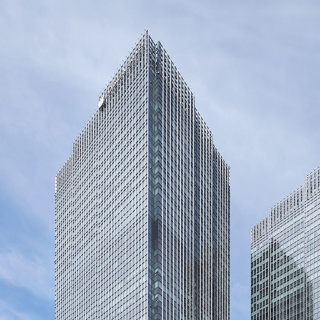
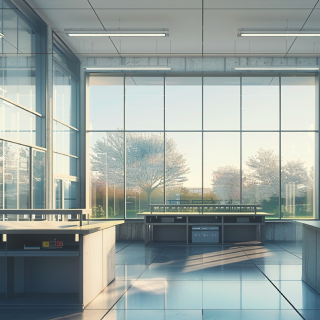
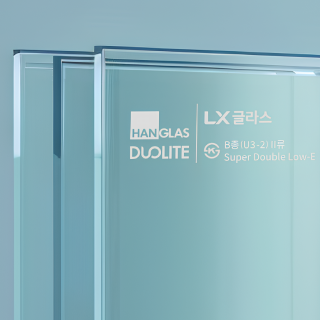

기업소개
제품소개
자료실
인재채용
고객지원
사람, 공간, 환경을
새로운 미래로 연결합니다.
Business
Company

Glass Business
국내 최초로 로이유리를 개발하였고 고성능 코팅유리, 가전용 유리 등 끊임없이 제품 개발을 이어가고 있습니다.

Glass Business
국내 최초로 로이유리를 개발하였고 고성능 코팅유리, 가전용 유리 등 끊임없이 제품 개발을 이어가고 있습니다.

Glass Business
국내 최초로 로이유리를 개발하였고 고성능 코팅유리, 가전용 유리 등 끊임없이 제품 개발을 이어가고 있습니다.
Our Glass
Products
코팅유리
원판유리
복층유리
특수유리
Media
News
보도자료
LX글라스, 품질 관리 강화를 위한 듀오라이트 클럽 제도 개편
2025.02.24
보도자료
LX글라스, 세계 최고 단열성능의 더블로이유리 ‘SKN154II’ 논엣지 버전 출시
2025.01.16
보도자료
LX글라스, 그레이 색상의 저반사 더블로이유리 SKG135II 출시
2024.12.02
보도자료
LX글라스, 2025년 임원인사 단행
2024.11.19
보도자료
LX글라스, ‘2024 대한민국 KS명가’ 선정
2024.11.19